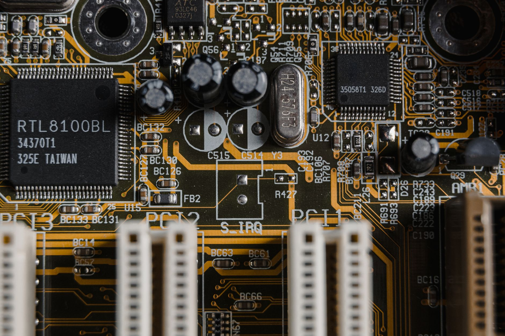

우주 방사선 버티는 차세대 반도체 소재 밝혀졌다

극한 우주 환경은 반도체 소재에 가장 가혹한 시험대다. 태양풍과 우주 방사선은 반도체 내부 원자 구조를 뒤흔들어 오작동이나 완전한 기능 상실을 유발한다. 최근 연구진이 방사선 조사 환경에서 차세대 반도체 소재의 거동을 실시간으로 관찰하는 데 성공하며 업계의 주목을 받고 있다.
이번 연구의 핵심은 '실시간 투과전자현미경(in-situ TEM)' 분석 기술을 활용해 방사선 피폭 순간부터 소재 내부 결함 생성 과정을 나노미터 수준에서 추적했다는 점이다. 기존에는 피폭 전후 비교 분석에 그쳤지만, 이제는 손상 메커니즘 자체를 실시간으로 포착할 수 있게 됐다.
연구 결과, 질화갈륨(GaN) 및 산화갈륨(Ga₂O₃) 계열 소재와 비교했을 때 일부 와이드밴드갭(WBG) 반도체 소재가 방사선 노출 후에도 결정 구조의 80% 이상을 유지하는 것으로 나타났다. 특히 다이아몬드 반도체와 4H-SiC(탄화규소) 소재가 높은 방사선 내성을 보였다.
탄화규소(SiC) 소재는 기존 실리콘 대비 방사선 저항성이 3~5배 높은 것으로 평가된다. 항공우주 분야에서 SiC 기반 소자는 고온·고방사선 환경에서 최소 10년 이상 안정적으로 작동할 수 있다는 시뮬레이션 결과도 함께 발표됐다. 이는 위성 탑재 반도체 수명을 획기적으로 늘릴 수 있는 수치다.
국내에서는 SK실트론, 예스파워테크닉스 등이 SiC 웨이퍼 및 소자 개발에 속도를 내고 있다. SK실트론은 미국 듀폰의 SiC 웨이퍼 사업부를 인수한 뒤 글로벌 공급 역량을 키워왔으며, 현재 6인치에서 8인치 SiC 웨이퍼로의 전환 투자를 진행 중이다.
해외에서는 울프스피드(Wolfspeed), 로힘(Rohm), ST마이크로일렉트로닉스 등이 SiC 반도체 시장을 선점하기 위한 투자 경쟁을 벌이고 있다. 특히 울프스피드는 미국 정부의 반도체 지원 자금을 받아 노스캐롤라이나에 대규모 SiC 웨이퍼 공장을 증설 중이다.
전문가들은 이번 연구가 단순한 학술적 성과를 넘어 실제 방산·우주 산업에 직접 적용될 수 있다고 강조한다. 한국항공우주연구원 관계자는 '저궤도 위성용 전력 반도체에 방사선 내성 소재를 적용하면 위성 재발사 주기를 줄이고 운용 비용을 대폭 낮출 수 있다'고 밝혔다.
정부 차원에서도 방사선 내성 반도체 소재에 대한 관심이 높아지고 있다. 산업통상자원부는 '우주 핵심 부품 국산화 로드맵'을 통해 2028년까지 SiC·GaN 기반 우주용 반도체 소자의 국산화율을 60% 이상으로 끌어올리겠다는 목표를 제시했다.
방사선 내성 소재 연구는 군사용 전자장비에도 직결된다. 핵전자기파(EMP) 공격이나 핵환경에서 살아남는 군용 반도체에 WBG 소재를 활용하는 방안이 미국, 유럽, 한국 국방연구기관에서 동시에 검토되고 있다. 방산 분야 SiC 반도체 시장 규모는 2030년까지 연평균 22% 성장할 전망이다.
이번 연구 결과는 반도체 소재 스타트업들의 몸값에도 영향을 미치고 있다. 국내 소재 공급망 국산화를 목표로 하는 스타트업들이 SiC·다이아몬드 반도체 소재 개발에 뛰어들며 벤처캐피털(VC)의 투자 문의가 급증하는 추세다.
시장조사기관 욜 디벨롭먼트(Yole Développement)에 따르면 글로벌 SiC 반도체 시장은 2025년 약 30억 달러에서 2030년 100억 달러 규모로 성장할 것으로 예측된다. 전기차와 우주 분야가 성장의 양대 축으로 꼽힌다.
업계에서는 이번 연구를 계기로 국내 소재·부품·장비(소부장) 기업들의 방사선 내성 소재 투자가 가속화될 것으로 기대하고 있다. 특히 소재 국산화주를 중심으로 기대 매수세가 확대되는 분위기다.
장기적으로 방사선 내성 반도체 소재는 우주, 방산을 넘어 원자력 발전소 내 센서·제어 시스템, 의료용 방사선 장비 등 다양한 산업으로 응용 영역이 확장될 전망이다. 국내 소부장 업계가 이 분야 선점을 위한 기술 투자를 서둘러야 한다는 목소리가 커지고 있다.